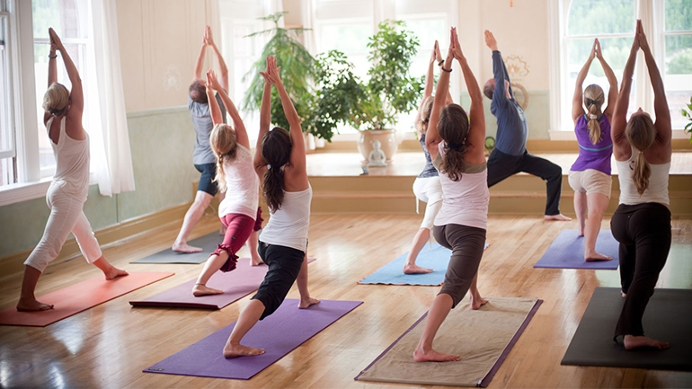
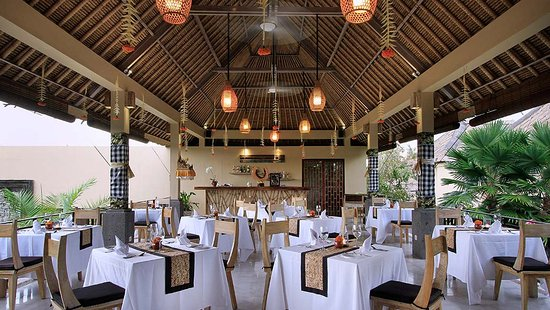
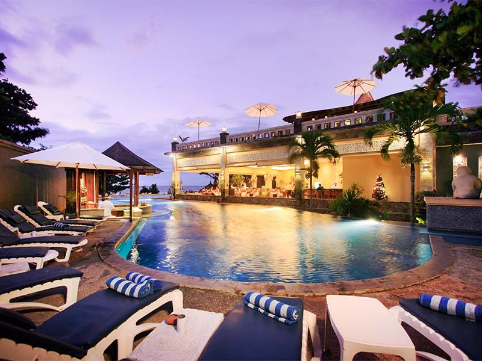
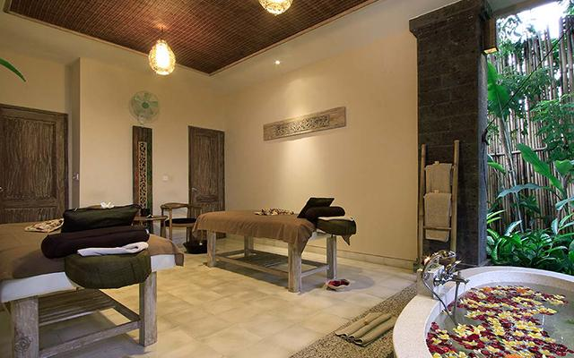
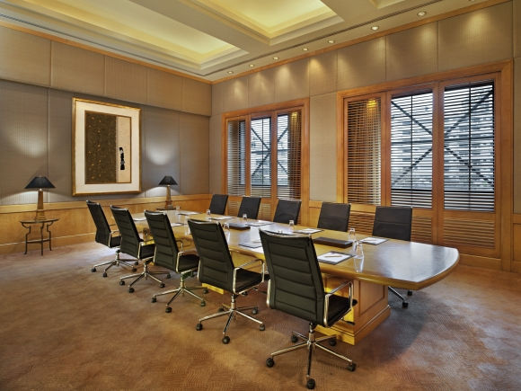
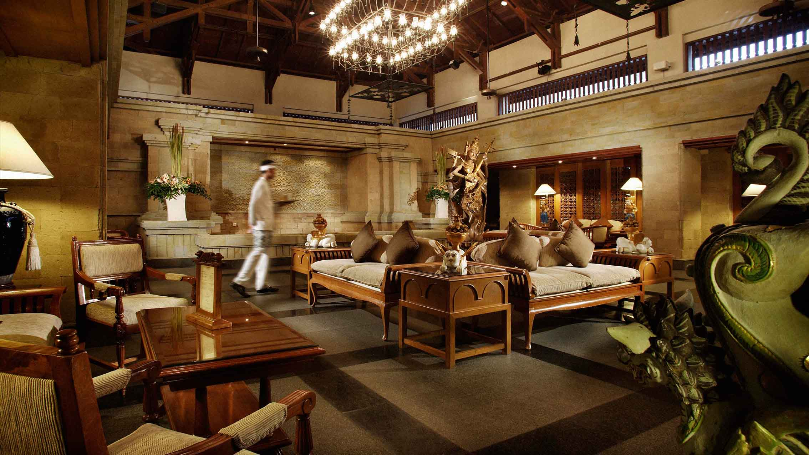

HOME
FACILITY
BOOK A ROOM
Yoga Center
Positioned on the upper floor incorporate with Radha Spa, it’s a circled floor and coned style grass roof. This place is a holy land with high level vibration, is the best place for yoga and meditation to recharge mind and spirit. Enjoy Morning Free Yoga session by a Balinese Yoga Instructor in a spacious yoga room overlooking to lush rice field and palm trees. Throughout the ancient art of classical yoga, you will learn technique to still your mind, strengthen your body and expand your consciousness using posture, breath work, meditation and relaxation. All guests may join the Balinese activities such us : Balinese Dance Lesson, the coconut leave craft and offering making together with our staff on afternoon time after lunch.


The Kumbuh Restaurant
KUMBUH is taken from the Banjar next to the resort. The Restaurant is in second floor building incorporate with The Lobby at the first floor. It has 24 seats and an unequalled vantage point to watch the brilliant color of the setting sun. The menu offers you a combination of wonderful Balinese specialties and more familiar Western dishes.
The Pool
An extensive shaped swimming pool is perched in front of the restaurant and lobby area with awesome view over the garden and surrounding nature. Soak in 15 meters long pool having an ice cold beer and our special drink of the day. Unwind or reading books on a daybed while enjoying the serenity. This stunning infinity pool lined with BatuChandi stone, appears to float in its setting. It’s a unique swimmer feeling for swimming around the area.


Radha Spa
Radha Spa is the for mankind in the life, where “life be confidence” relax to refresh the body and conscience throughout their trip. This is the spa designed to facilitate the fundamental needs for the trip more memorable, where guests will find warm touch, genuine and comfortable atmosphere. Whether sharing your spa experiences with friends or loved one sand yourparents. Radha Spa provide services and helps guests to find their glow and radiant. Find your glow, brighten your mood and enjoy the moment!!
Business Center
A tastefully appointed business center incorporate with the lobby area. The Business Centre is provide a social setting for guests to take pleasure for reading, meeting and using our computer with the internet access. There are some books collection by Pramana which can borrow along the stay by contacting our reception.


Lounge
A tastefully appointed Open Lounge environment is incorporated within the Restaurant, which is elevated slightly higher that the ground level for an added dimension of space and purpose. The Lounge will provide a social setting for guests to take pleasure in afternoon tea along with a selection of light refreshments.
General Facilities
Details
Air conditioned King size or twin bed with mosquito net
Spacious bathroom with marbel sunkenbath and shower
Private terrace or balcony with dining table
Nice view to garden and pool from terrace and Bed room
Amenities
Daily fruit basket
Tea & coffee making facilities
Electronic Safe Deposit Box
Refrigenerator
Complimentary bottled mineral water
LED cable TV and DVD player
Luxury Bathroom Amenities
Hot & cold shower and bath
Free wireless internet
IDD Telephone
Bathrobes & Slipper